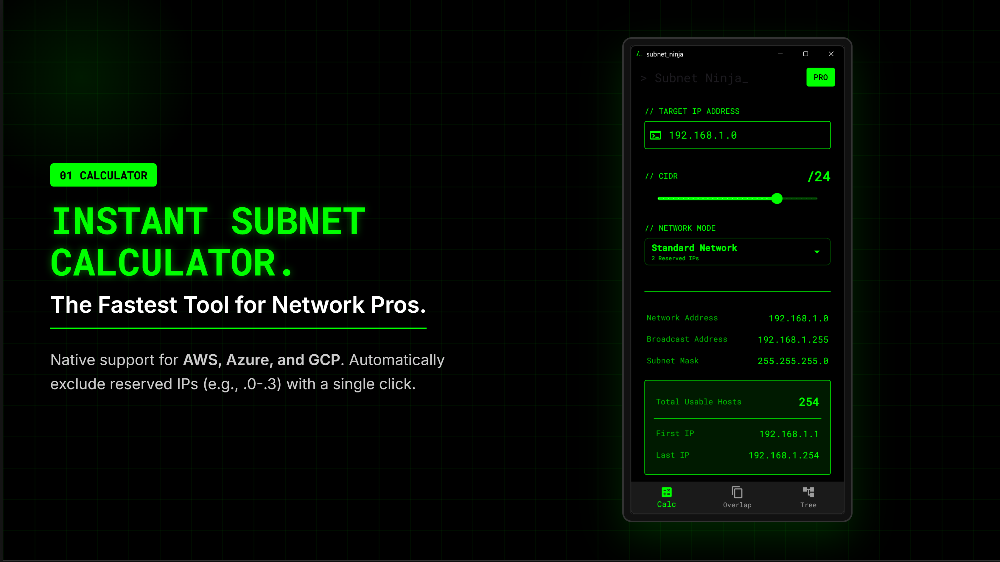

01 / 03 — Calculator
> cat features.txt
- Cloud Reserved-IP Modes: AWS / Azure / GCP host calculations with reserved IP rules.
- CIDR Overlap Detection: Compare two IPv4 CIDR lists (ideal for AWS/Azure/GCP planning).
- Visual CIDR Tree: Split a root CIDR into smaller subnets and copy results instantly.
- Copy to Clipboard: One-tap copy for quick use in configs and notes.
- Local-first: All calculations run on your PC. No account, no signup.
STATUS: LAUNCH SALE
See Microsoft Store for pricing in your region.
> EXECUTE INSTALL
Purchase/activation is handled by Microsoft Store.